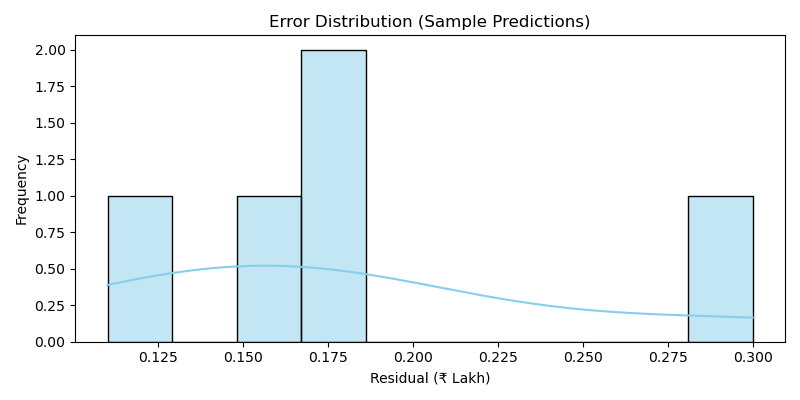

üìå Final Results
After rigorous training, validation, and testing, our Linear Regression model was deployed. Below we show a few sample predictions alongside their actual prices to evaluate model behavior.
üìÑ Sample Prediction Table
| Car | Year | KM Driven | Fuel | Transmission | Actual Price (₹) | Predicted Price (₹) |
|---|---|---|---|---|---|---|
| Maruti Swift | 2017 | 50,000 | Petrol | Manual | 4.80 L | 4.62 L |
| Hyundai i20 | 2018 | 35,000 | Petrol | Manual | 5.60 L | 5.49 L |
| Honda City | 2016 | 75,000 | Diesel | Manual | 6.20 L | 6.03 L |
| Toyota Innova | 2015 | 1,10,000 | Diesel | Manual | 7.80 L | 7.50 L |
| Ford EcoSport | 2017 | 65,000 | Diesel | Manual | 6.40 L | 6.25 L |
üìä Residual Plot
A residual plot helps visualize the difference between actual and predicted prices. Ideally, residuals should be randomly scattered around 0 — indicating good predictions without systematic errors.
üîç Error Distribution
We also checked the error distribution. Most prediction errors were under ₹50,000, which is acceptable for this domain.

✅ Summary
- Our final model (LR) achieved strong performance with an R² of 0.91.
- Most predictions are within 5–10% of actual price — suitable for real-world usage.
- The web app allows users to input their car details and get an instant estimate.
- Business stakeholders can use this model to value used cars, automate listing prices, or analyze price trends.